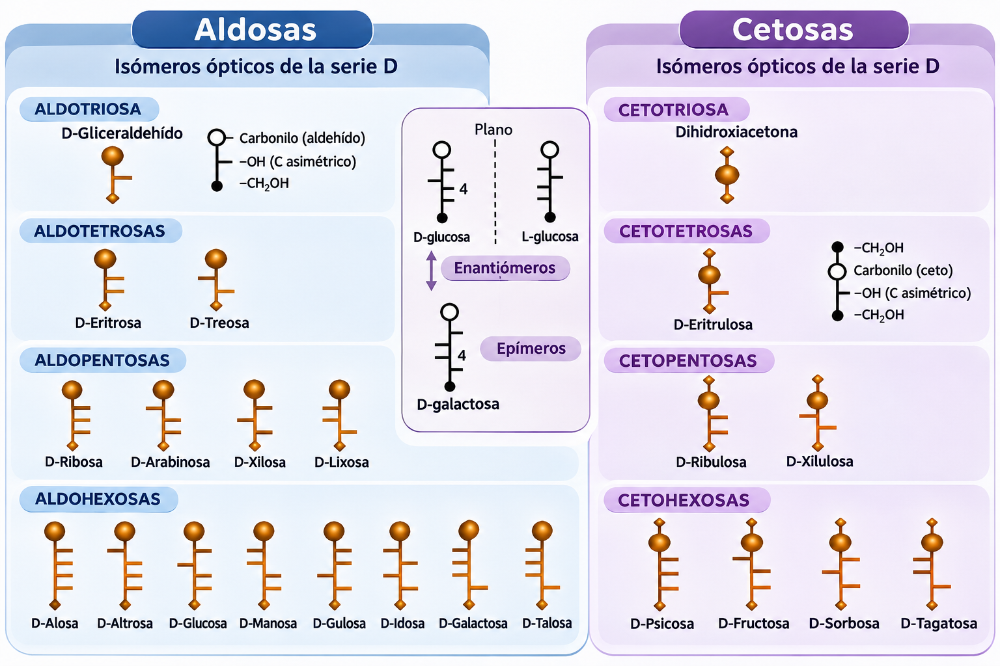

Los monosacáridos se clasifican en aldosas y cetosas según tengan un grupo aldehído o cetona, y por su número de carbonos. Desde el menú superior se accede a los modelos 3D interactivos de triosas, tetrosas, aldopentosas, aldohexosas, cetopentosas y cetohexosas, con sus carbonos asimétricos señalados.
